Witch Hat Atelier, Vol. 7 — Kamome Shirahama
I was bawling my eyes out in this volume. Volume 6 ended on a mysterious statement from Beldaruit to Coco regarding Qifrey, and here we finally get the answer: why Qifrey is so obsessed with finding the Brimmed Caps, what he lost to them, and what his true goal is. Beldaruit's explanation sends Coco into an emotional spiral, and watching her break down, crying out to Qifrey about how scared she was, broke me too. The way Qifrey comforted her showed how much he genuinely cares for her, and that was only reinforced earlier when Olruggio questioned whether Qifrey was keeping Coco around just to get to the Brimmed Caps. His words and actions proved otherwise. He's still scary, Qifrey, and there's clearly still something he's keeping to himself. But I can say with confidence that Coco's trust in him is not misplaced. There is a far more complex reason behind his actions, and I can't wait to uncover it. What stays with me most is Coco's choice: when given the chance, she chose to pave her own path to help those in need, and not just for her own sake.

Witch Hat Atelier, Vol. 6 — Kamome Shirahama
This volume had me holding my breath from the very first page. Picking up right where Volume 5 left off, Qifrey, Olruggio, and the apprentices are summoned to The Great Hall by Beldaruit, one of the Three Wise Ones, and what follows expands the world far beyond the Atelier, giving us a deeper look at the witches, the ban, the Healing Spire, and the rules that govern it all. The way the girls passed their second test was amazing, their teamwork earning them passing in flying colors, and it was genuinely wonderful to watch. We also get a glimpse into Agott's background, her family, and why she's been pushing herself so hard to prove her worth, which made her feel so much more real. The bond between her and Coco is getting stronger, and Agott is slowly opening up to her peers. Beldaruit was such a fun and lovely character, and knowing he was once Qifrey's master makes me certain there's far more to him. With the tension between the wonder of magic and the control of it slowly building, I can't wait to see where this series goes.
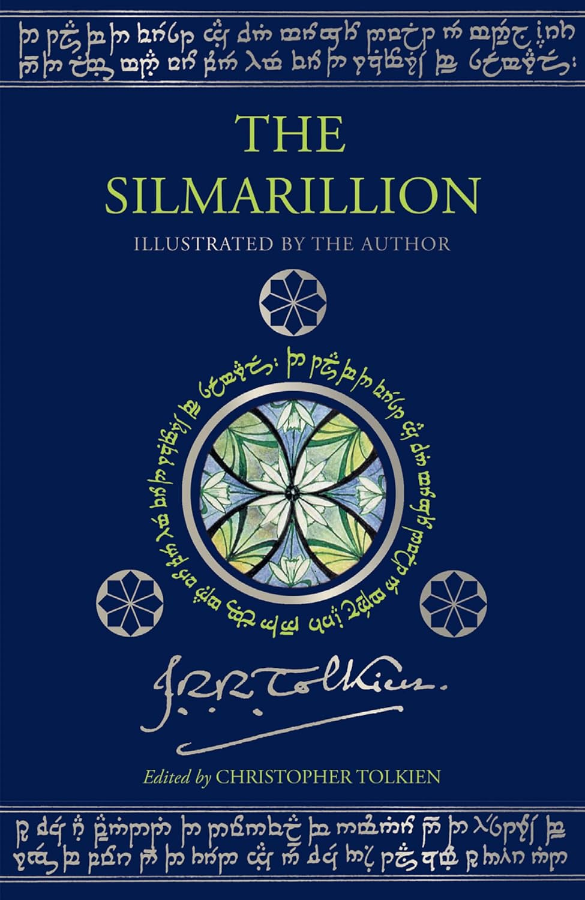
The Silmarillion — J.R.R. Tolkien
Tolkien didn't just write a myth, he created one. The Silmarillion is the kind of book that makes you reconsider everything you thought you understood about Tolkien's world. It delves into the myth-building of Tolkien's world: from the music of the Ainur, the creation of Arda, and the coming of the Elves and Men, through the long and arduous wars with Morgoth and eventually Sauron, to how the Silmarils and the Rings of Power came to be. It was such rich and detailed world-building. It's amazing how all this creative, imaginative world was built by Tolkien, considering the years it must've taken him. It widened my understanding of the Tolkien legendarium and let me appreciate The Lord of the Rings, and even The Hobbit, on a deeper level. The Old English was hard, and sometimes I had to backtrack and re-read paragraphs, though that's not a detriment, and not the author's fault. Language has just evolved differently since. After this, I want to go back and re-read The Lord of the Rings and The Hobbit again, and it will now be a far richer read than ever before.

The Elsewhere Express — Samantha Sotto Yambao
Magic realism and I have a love-hate relationship — it's a hit or miss, and unfortunately, this one is a miss. The Elsewhere Express follows characters aboard a train composed and run entirely by thoughts, tasked with finding their compartments and eventually tracking down a stowaway. The world-building is genuinely creative and imaginative, and I found one small moment of connection in the almost-blind experience of a character, which hit differently given my limited eyesight. The story, however, is so front-loaded with world-building that character purpose and story progression get completely lost. Halfway through, I still wasn't sure what the characters were trying to do or why, and the train itself was visually impossible to picture: how do you imagine a compartment or a room made of thoughts or emotions? Since I tend to visualize in the character's perspective when I read, not being able to picture the surroundings left me lost. The author has an amazing imagination, and she's never failed me before, but this one had me trudging through from February to months later. I almost DNF'd, and the ending left me with only a vague idea of how it concluded.

Witch Hat Atelier (Vol. 1–5) — Kamome Shirahama
Witch Hat Atelier tells an amazing story partnered with some of the most gorgeous art I've seen in manga — the kind of series that makes you want to slow down and just look. Coco is an ordinary girl passionate about magic but born without it, until she accidentally witnesses that magic isn't cast through incantation, but drawn. One forbidden mistake later, she finds herself apprenticed to a witch named Qifrey, racing to save her mother while uncovering a world far more dangerous than she imagined. We see Coco navigating the wonders and terror of magic while building meaningful friendships with the other apprentices in Qifrey's atelier. What I love most is that magical ability isn't something you're born with — it's learned, practiced, drawn with your own hand — and that makes every spell feel creative and alive. The series also quietly wrestles with the tension between innovation and strict tradition, and it gives both sides room to breathe. Nothing worth noting through these first five volumes — the series itself gives me nothing to complain about, only the price tag does. Volume 5 ended on a cliffhanger that has me genuinely restless, and I think that's the highest compliment I can give: I'm not just curious about what happens next — I'm invested.

Before I Knew I Loved You — Toshikazu Kawaguchi
Toshikazu Kawaguchi has delivered another collection of short stories that would tug at your heart. If you're new to this series, it revolves around people attempting to travel back to the past and occasionally glimpse the future in order to resolve past regrets, make informed decisions, or address their doubts. In the course of events, they find meaningful resolutions and newfound determination. One of the stories, that of the patient man, felt like a page out of a manga or a storyline from an anime — first loves, old regrets, and everything in between. The woman who wanted to look into the future is probably my favorite, though definitely the most heartbreaking. More than her story, I especially liked that since she visited the future, we see a different but happy Kazu. They're short, but they fill the heart.

The Apothecary Diaries, Vol. 16 — Natsu Hyuuga
Volume 16 is densely packed — brimming with mysteries, plot developments, and a little bit of everything. Maomao and Jinshi are back to solving a mystery together, Yao and En'en reappear, we get a snippet of Maomao's family dynamics, and the volume culminates in a smallpox outbreak with a significant moral dilemma at its heart. Seeing them work together again reminded me of when we first started this series — and despite their primarily business-oriented interactions, the little snippets of affection feel like a sweet candy given to a child. The haunting idea of Kokuyou as a "mirror" resonated deeply: the thought-provoking notion that we sometimes treat people the way they treat us, especially when we're on defense mode, genuinely made me stop and reflect. The slow-burn romance between Basen and Lishu, though, is quite frustrating — Basen is an idiot, and I really felt for Chue and Maamei. And Maomao's heartbreak deeply saddened me — the kind of emotional gut-punch that reminds you why you fell in love with this series in the first place.

The Apothecary Diaries, Vol. 15 — Natsu Hyuuga
This volume doesn't ease you in — it goes straight into surgical territory, and somehow makes historical medical procedures genuinely gripping. The pacing is almost whiplash: one moment you're laughing at a character interaction, the next your heart is quietly breaking over Ah Duo's arc. What holds it all together is Hyuuga's confidence in shifting tones without warning — and pulling it off every time. The one small complaint: Jinshi and Maomao barely share scenes, which will sting for anyone invested in them. But even with limited page time, the weight of how he loves and values her still comes through. By the last page, my heart was full in the best way — this series keeps finding new ways to earn it.

Wisteria: Wand and Sword (Vol. 6–12)
I came for the anime and stayed for everything else. When the story's weekly pace became unbearable, I turned to the manga — and promptly caught up to the latest volume, which means I'm back to waiting all over again. The premise hooked me immediately: a boy with zero magical ability navigating a world that prizes magic above all else. What sets it apart is that he doesn't sulk about it — he channels his exceptional swordsmanship toward a singular, ambitious goal: reaching Elfaria, a Magia Vander of the highest order. The art is stunning, the world-building is rich, and the story keeps you rooting for him every step of the way.

The Woods — Harlan Coben
The Woods delivers exactly what you'd hope from a thriller — a prosecutor unraveling the mystery of his sister's fate, piecing together clues that pull you deeper with every chapter. Coben builds genuine tension throughout, and the procedural elements feel grounded and compelling. That said, seasoned readers of the genre may find the red herrings a little transparent, and a few character motivations don't quite hold up under scrutiny. These are small cracks, but noticeable ones. None of that, however, prepares you for the ending. It lands like a gut punch — the kind you genuinely don't see coming, and that lingers long after you've closed the book, making you wonder what might have been. Flaws and all, The Woods is a thoroughly satisfying read.

Project Hail Mary — Andy Weir
The movie brought me to the book, but the book made me fall in love. Andy Weir has a gift for making complex science feel accessible and thrilling — and when you pair that with Ray Porter's audiobook narration, it becomes something else entirely. Porter is hands down the best narrator I've encountered; he brings every character and concept to life in a way that makes even the densest scientific moments a pleasure to follow. The book also fills in details the movie couldn't, which made the whole experience richer. A genuine page-turner that works whether you've seen the film or not.

Escape Clause — John Sandford
This installment left me feeling a bit... meh, which isn't something I expected from a Virgil Flowers novel. Two endangered Amur tigers are stolen from a zoo, and Virgil is brought in to recover them. The motive: their body parts are being sold for illegal traditional Chinese medicine. Running parallel to this is a subplot involving Virgil's girlfriend, Frankie, whose case of mistaken identity leads to her being assaulted by people targeting her sister. The story leans more thriller than mystery, and there are moments of real intensity, particularly in the scenes involving animal cruelty and murder. The title also turns out to be more fitting than it first appears: no one truly faces justice. The kidnappers end up dead, those who attacked Frankie are bailed out by the company that hired them, and the mastermind simply unravels mentally. Everyone escapes through a loophole or technicality. The title feels disconnected at first glance, and even once the thematic logic clicks, the resolution isn't particularly satisfying. This is the first Virgil Flowers novel that didn't have me on the edge of my seat. Not a bad book, but definitely not a standout in the series, and for a franchise built on sharp, propulsive storytelling, "not bad" is a quiet disappointment.
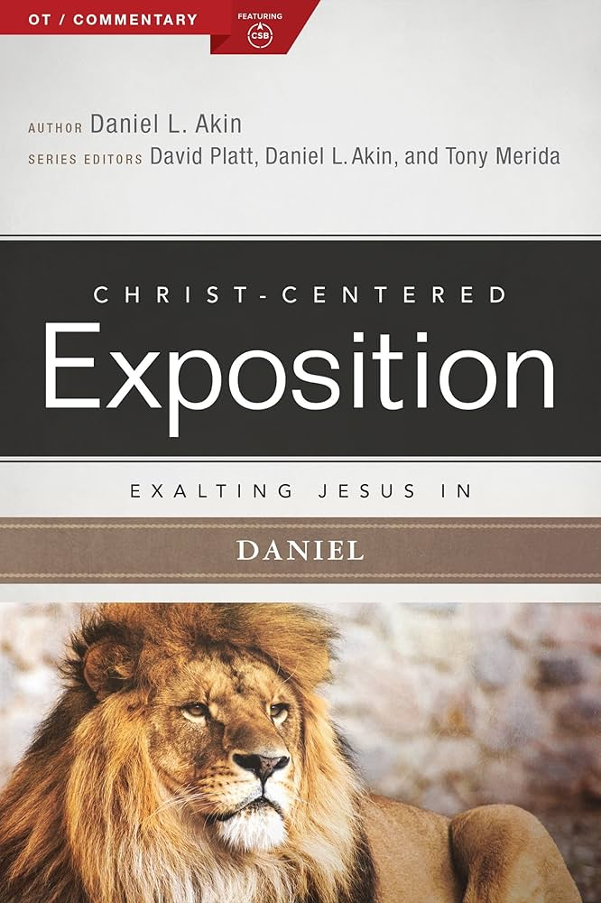
Exalting Jesus in Daniel — Dr. Daniel L. Akin
This is the kind of commentary you pick up when you're lost in a maze of prophecies and desperately need a guide. Exalting Jesus in Daniel walks readers through the book of Daniel, from its familiar stories to its more difficult prophetic passages, through a Christ-centered lens that keeps God's sovereignty at the forefront. The commentary does what I needed most: it helped me discern the flow between past events and future visions without making the prophecies feel distant or irrelevant. One phrase that kept appearing was "the appointed time," and the book captures it well: "Things will move ahead as He has decreed, and things will also end as He decreed." What encouraged me most, though, was how my own personal reflections from answering my BSF questions would sometimes align with the insights here. Those moments felt like gentle confirmations from the Holy Spirit, reassuring me that He is guiding me through His Word. Even now, some of those prophetic passages remain genuinely difficult for me to grasp, though that's more a reflection of Daniel itself than of the commentary's shortcomings. This book reminded me that even when I don't fully understand, God does, and my part is simply to trust Him and His promises.
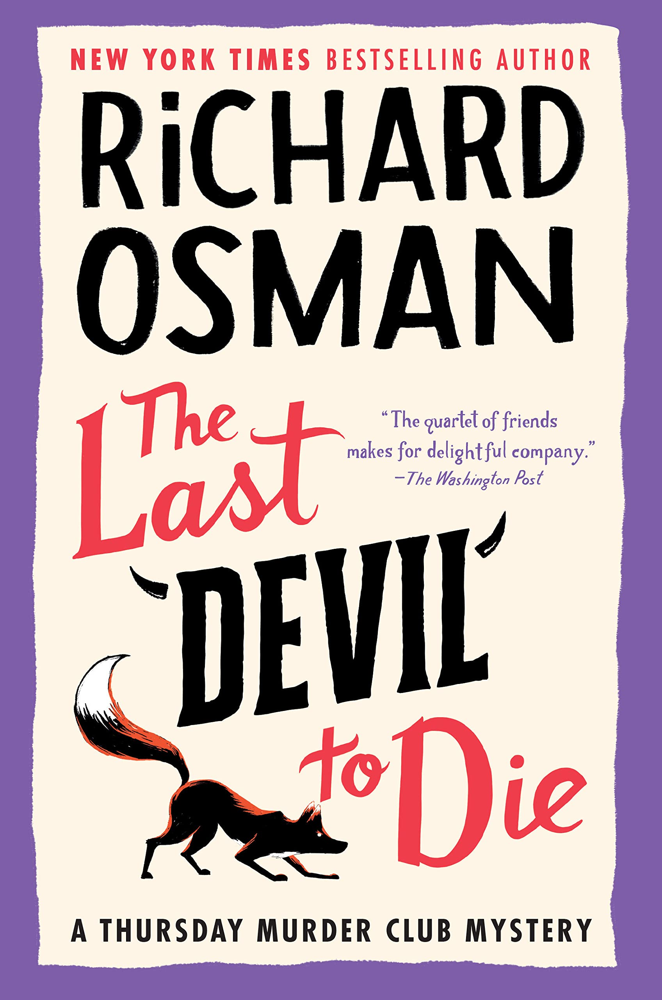
The Last Devil to Die — Richard Osman
This fourth installment floored me. Not because of the mystery, but because of the heartbreak. The Thursday Murder Club investigates a drug-related killing, but the real story is Stephen's declining mind and what it costs the people who love him. We've seen Stephen's mind slowly decline, but nothing prepared me for that moment of clarity when he makes a decision that completely shattered me. It broke my heart, for him and for Elizabeth. And then there's Joyce, who I found a little irritating in earlier installments, but this time I gained a new respect for her. What I once saw as annoying was really her way of staying strong, and beneath it she has a quiet emotional intelligence that shines through. The mystery itself wasn't the strongest in the series. I suspected the box early on, and the heroin subplot felt like a clear distraction rather than a real thread. I already have the next book waiting, but I think I need a moment to grieve Stephen first, much like Elizabeth.

Howl's Moving Castle — Diana Wynne Jones
Howl's Moving Castle is absolutely enchanting, the kind of story that makes you wish you could step inside its world. A young woman named Sophie finds herself entangled with the infamous wizard Howl and his magical, wandering castle, and what unfolds is a story about how people aren't always what they seem. The world-building is the real star here. The moving castle with its doors to different places and dimensions is the kind of home I wish I could live in. And Calcifer, whether on the page or on screen, remains my favorite: fiery, witty, and oddly lovable. Sophie and Howl are both exasperating in their own ways, and their romance felt a bit rushed. Beneath all the quirks, flaws, and frustrations, the story is ultimately about people longing to be loved and understood, and that's what makes me want to rewatch the film all over again.
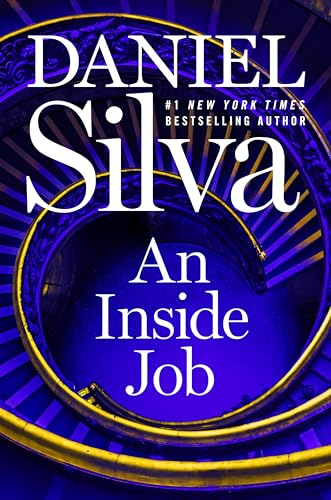
An Inside Job — Daniel Silva
Gabriel Allon has been my steady book date every year since 2006, and Daniel Silva still hasn't let me down. This one easily lands in my top three of the whole series. As always, Allon can't seem to stay out of trouble. What starts with the death of a woman pulled from a Venetian canal quickly spirals into an investigation and art retrieval that takes him back to Rome and across Europe. Following him through these cities feels like a form of literary travel; Silva lets me live and travel vicariously through Allon's journeys. The way Silva builds the con and slowly pulls back the curtain kept me hooked and on the edge of my seat from start to finish. I'd like to see more of Allon's old Mossad friends return in future books. After nearly two decades of reading this series, Silva still knows exactly how to keep me coming back.
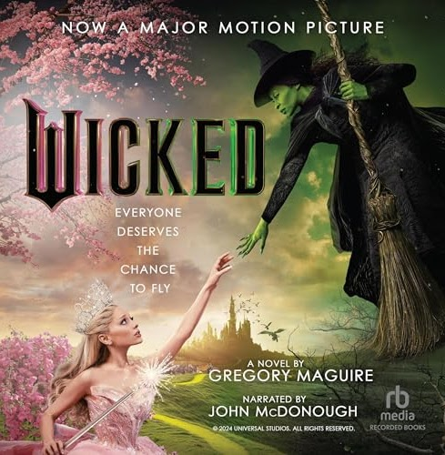
Wicked — Gregory Maguire
Wicked is a dense, weighty read, darker than the musical and packed with heavy themes that hit uncomfortably close to home. Gregory Maguire's novel reimagines the story of the Wicked Witch of the West, tracing her life from birth through the events that shaped her into Oz's greatest villain, or perhaps its most misunderstood rebel. Revisiting it as an audiobook made all the difference. Already knowing the content meant I could focus on the storytelling itself rather than being weighed down by all the social commentary, and that shift let me appreciate the novel in a way I hadn't before. It also turned out to be a surprisingly good companion during my morning routine, an unexpected but cozy way to sit with such a weighty story. The first time through, the sheer density of it all (racism, social injustice, systemic corruption, prejudice, moral ambiguity, religion, forgiveness) made it genuinely tough to get through, and that hasn't entirely changed on the second read. Wicked rewards the effort, but it asks a lot of you first.
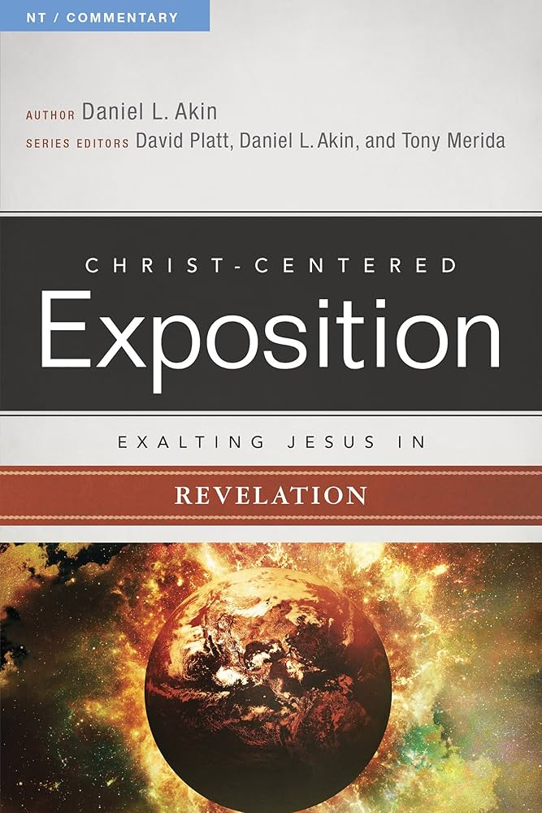
Exalting Jesus in Revelation — Dr. Daniel L. Akin
For a long time, I was intimidated by Revelation. The images of suffering, persecution, and tribulation made me fearful. I picked this up as a companion to my BSF study in Revelation, and it turned out to be an incredibly helpful resource. I appreciated how thoroughly Christ-centered the commentary was. It offered insights I wouldn't have thought of on my own, and whenever I felt lost in certain passages, it shed light and clarity in ways that deepened my understanding. Through BSF and this book, I found something unexpected: hope. I realized that I can face hardship because God holds the future, and this world is temporary. If being refined by fire is part of the path to eternity with Him, I can endure it, or at least pray for God's strength and sustaining grace to carry me through.
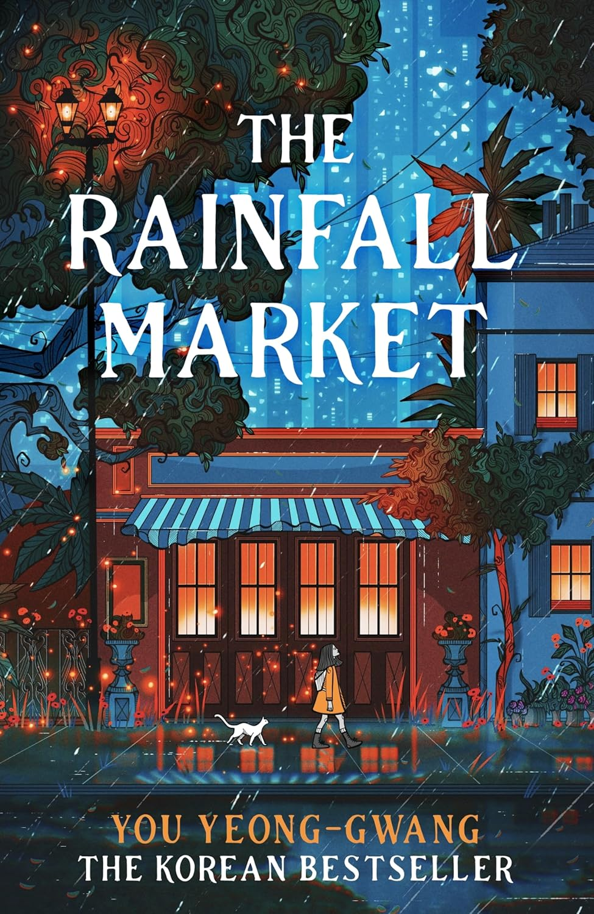
The Rainfall Market — You Yeong-Gwang
The whimsical title and dreamy cover drew me in, but The Rainfall Market is a case where the packaging outshines what's inside. Serin receives a golden ticket to a mysterious market run by dokkaebis, where she can trade one life for another. To obtain orbs containing glimpses of possible futures, she must complete the dokkaebis' tasks, and through these, we see fragments of the lives that could await her. The concept is genuinely unique, and the message that eventually emerges is worthwhile: our future is shaped not by wealth, fame, or career success, but by the relationships we nurture. True happiness isn't found in material things, but in contentment and the love of family and friends, and without those, even the brightest-seeming future will feel empty. I struggled to stay engaged and found myself setting the book aside often. I only finished it because I brought it along on a trip, and even then, it took weeks to complete. The world-building, while solid, didn't stand out in a genre already crowded with more imaginative settings, and the futures Serin encountered were consistently bleak in a way that felt more discouraging than thought-provoking. A novel with a beautiful premise and a message worth hearing, let down by pacing that made it hard to stay for either.
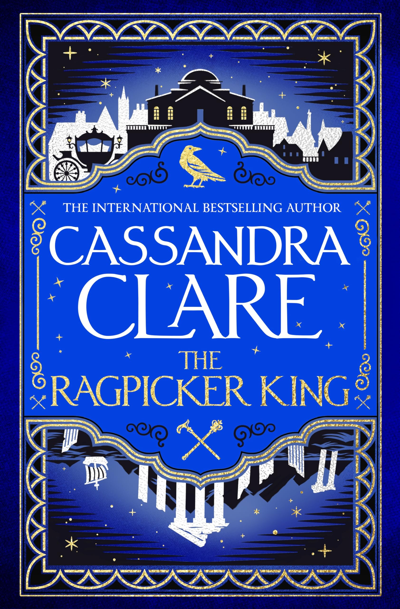
The Ragpicker King — Cassandra Clare
I have to restrain every fiber of my being to stop gushing about this second installment of the Chronicles of Castellane. If Sword Catcher is exposition and worldbuilding, The Ragpicker King is the rising action building up to the climax. Character development and storyline take center stage now that we're acquainted with Castellane's world. Cassandra Clare has a flair for creating complex characters with conflicting motivations, and it's a joy and a thrill to see the end results. There are a series of shocking revelations about several characters: some are good, some are great, and some are eerily chilling. Your love/hate relationship with some of them becomes genuinely ambiguous, as you may find yourself agreeing with their reasoning at times or reeling from their double standards at others. I am so invested in this series that I can't stop thinking it over and over again, and I might just reread it from Book 1 for pure enjoyment, and maybe pick up some more clues along the way.
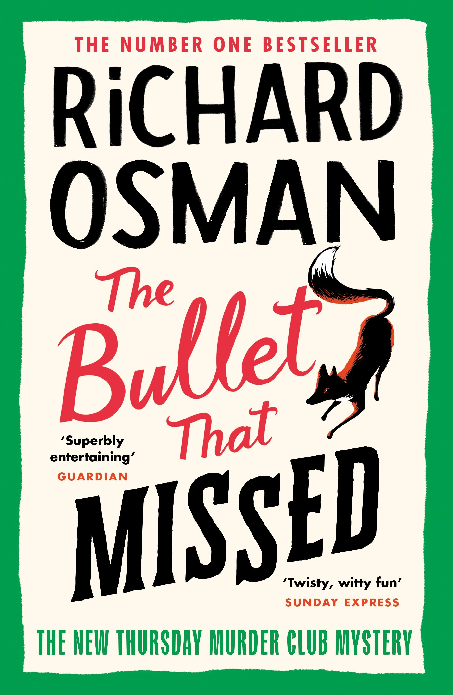
The Bullet That Missed — Richard Osman
The third installment in the Thursday Murder Club series is another clever and charming mystery. The club is investigating a decades-old unsolved case, only to find themselves targeted by a killer who wants the past to stay buried. The red herrings are sneaky and everywhere: you really have to pay attention. The why and the how caught me off guard, even though I partially guessed what happened. I also liked how the author showed the parallelism between past and present, and how the characters' choices shaped their futures. It ties into something I keep noticing across the books I've been reading lately: this recurring thread of "what ifs" and regrets. Joyce was a tad annoying in this one, which is part of why I rated it lower than the second installment. It's fascinating how this book, like so many others I've read recently, keeps circling back to the weight of choices and what they cost us.
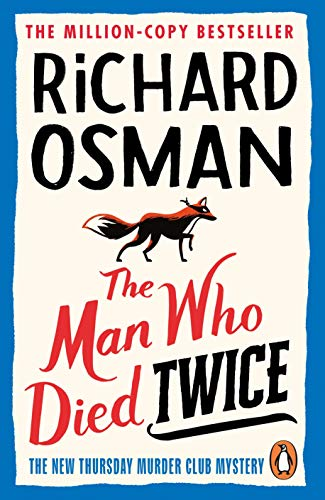
The Man Who Died Twice — Richard Osman
It's one of those rare cases when a sequel is far better than the first book. This time, the Thursday Murder Club finds itself entangled in a dangerous web of stolen diamonds, old secrets, and unexpected betrayals. The pacing is improved, and the story, along with the character development, will pull you in completely. The twist was quite clever! Each of the four major characters now holds a special place in my heart. Sure, there are clichés, but they are to be expected in a cozy mystery. It makes you wish you had such good friends with you when you reached their age, and that together you would equally solve murder cases.
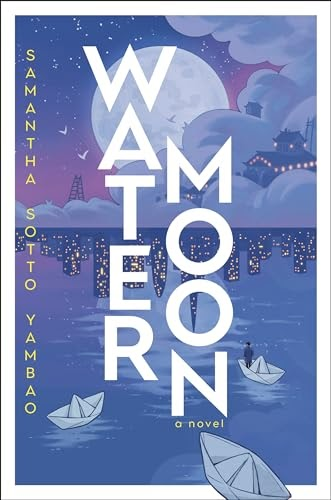
Water Moon — Samantha Sotto Yambao
Water Moon is magical realism and adventure wrapped into one, and I absolutely loved it. A girl inherits a pawnshop hidden in the backstreets of Tokyo, one that only the lost can find, where customers can pawn their life's decisions or their deepest regrets. The fantastical world Yambao has built is one I would love to immerse myself in completely. It evokes all the "what if" scenarios that arise when we confront the consequences of our choices, and it's also deeply a journey of self-discovery. Jumping into puddles, night markets in the clouds, paper cranes, riding on songs and rumors. Someone seriously needs to turn this into an animated film, because the Studio Ghibli vibes are real. Even the origami dust jacket is on point. I'm yearning to fold it, but I'm not sure I ever will.
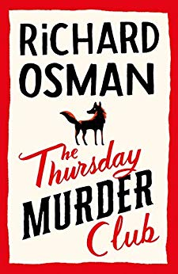
The Thursday Murder Club — Richard Osman
The Thursday Murder Club is a delightful cozy mystery, exactly the kind of book you'd want to start the year with. A group of septuagenarian friends living in a retirement village meet weekly to discuss unsolved murder cases, until one day, they find themselves in the middle of one. The humor and banter between the characters is what makes this one so enjoyable. There's a warmth and wit to their dynamic that keeps the pages turning. My only complaint is the excessive number of characters and plot points, which can get a little hard to track. It's a charming, witty read that proves retirement village residents might just make the best detectives.